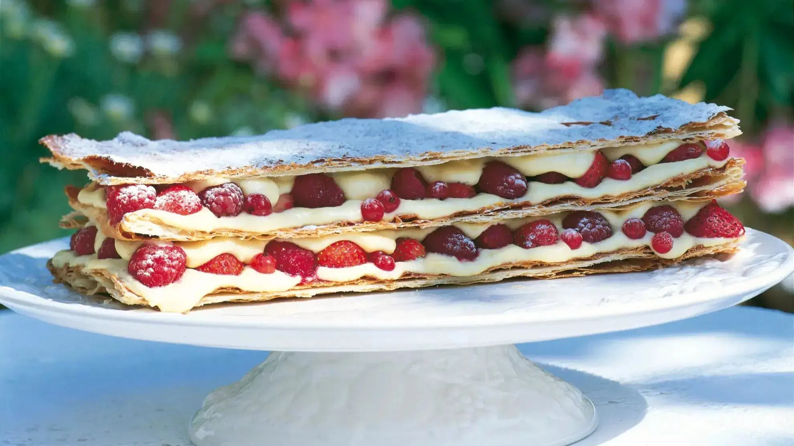

Mille-Feuille, meaning "thousand leaves," is an exquisite French pastry made of three layers of puff pastry alternating with two layers of rich pastry cream. The top is typically glazed with icing and decorated with a distinctive pattern of chocolate feathering. This elegant dessert is known for its delicate, crisp layers and luscious vanilla cream filling.
Ingredients
- 1 package (500g) all-butter puff pastry, thawed if frozen
- 2 cups whole milk
- 1 vanilla bean, split lengthwise (or 2 tsp vanilla extract)
- 6 large egg yolks
- 2/3 cup granulated sugar
- 1/3 cup cornstarch
- 3 tbsp unsalted butter, at room temperature
- 1 cup powdered sugar
- 2 tbsp water
- 2 oz dark chocolate, melted
- Fresh berries for garnish (optional)
Preparation
Creating a perfect Mille-Feuille requires attention to detail and patience. The puff pastry must be baked until golden and crisp, while the pastry cream should be smooth and rich. Assembly requires a gentle touch to prevent crushing the delicate layers.
Chef's Tips
- Chill the pastry cream thoroughly before assembling to ensure it holds its shape.
- Use a serrated knife with a gentle sawing motion to cut the finished pastry without crushing the layers.
- For the classic feathered pattern, draw lines of melted chocolate across the white icing, then drag a toothpick perpendicular to create the design.
- Assemble the Mille-Feuille no more than 4 hours before serving to maintain the crisp texture of the pastry.